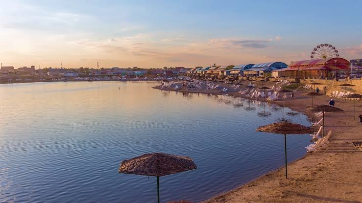
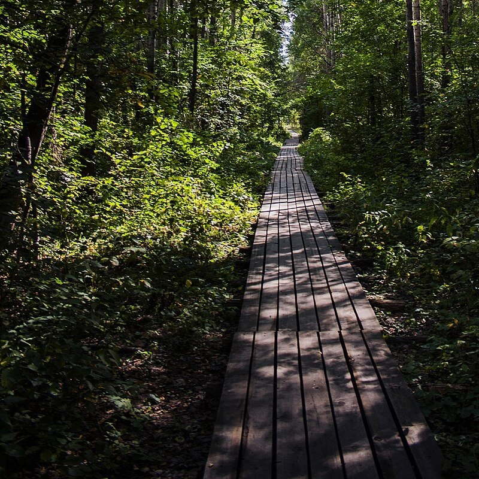
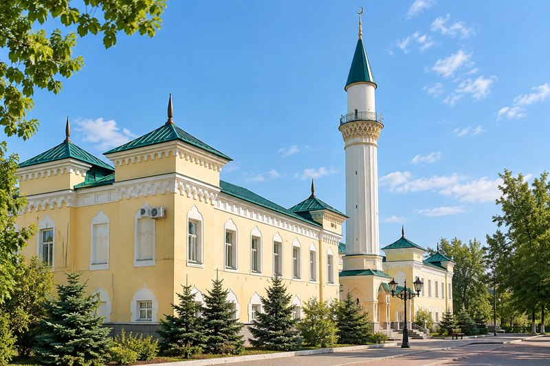
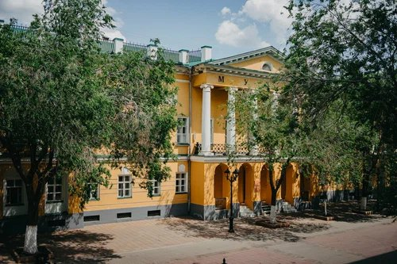
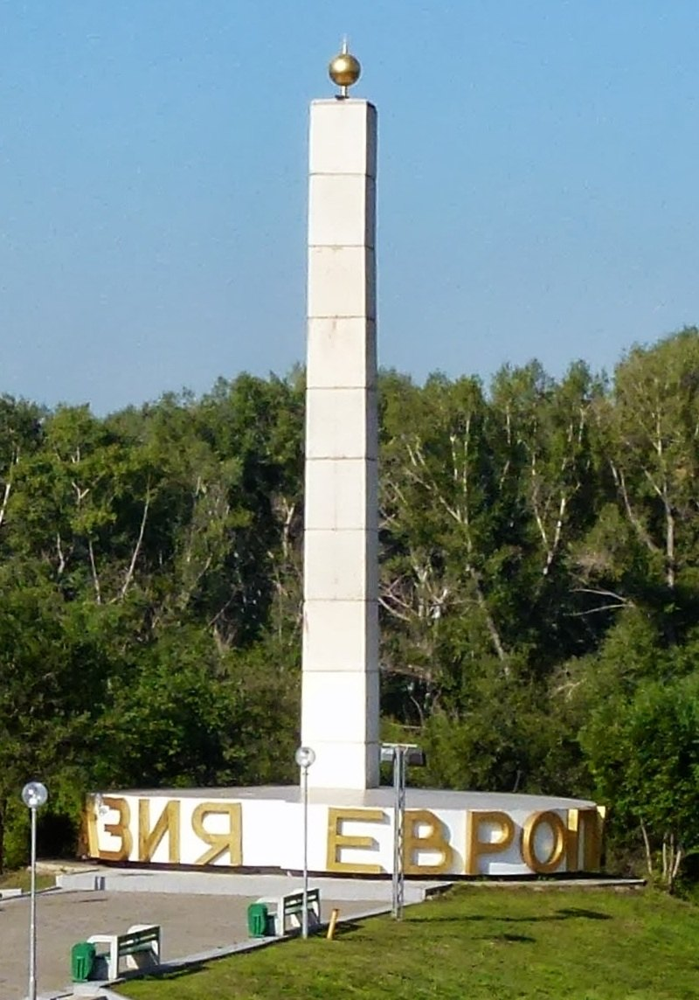

Соль-Илецкие озёра
Природный объект
- Автор: Мария К.
- Район: Соль-Илецкий округ
- Координаты: 51.1503° с. ш., 55.0027° в. д.
- Рейтинг: ★★★★☆ (167)
- Фото: 9
Это сайт-каталог достопремичательностей Оренбургской области, куда пользователи сами добавляют места
Добавляйте несколько снимков достопримечательности за один раз.
Каждое место сопровождается широтой и долготой.
Краеведы и жители делятся историей и деталями о своём крае.
Оценки и комментарии помогают выбрать, что посетить.

Природный объект

Природный объект

Религиозное сооружение

Музей

Памятник архитектуры